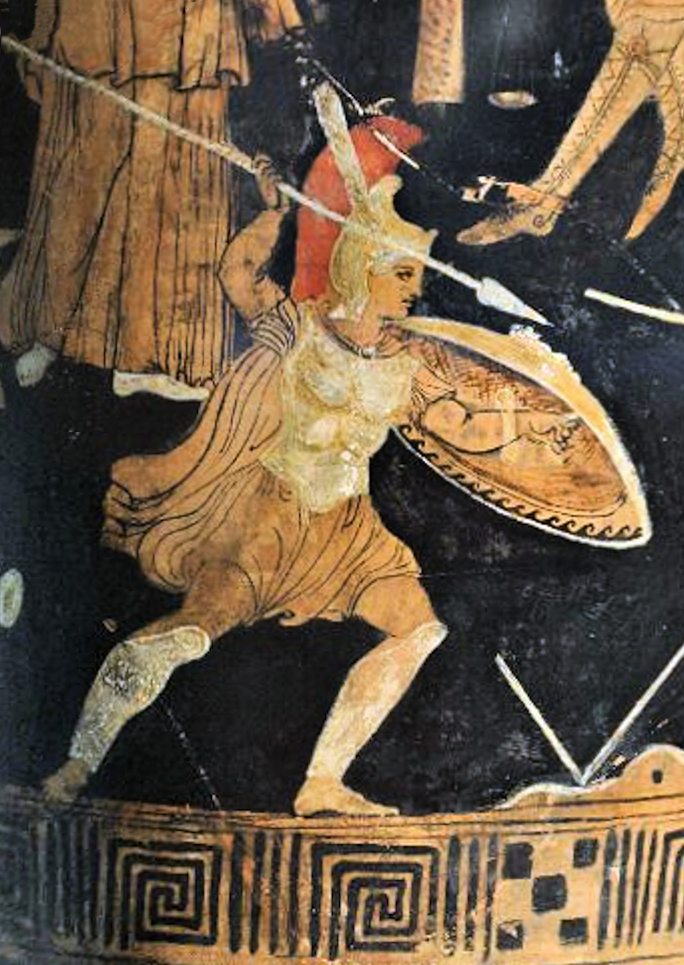

Question directrice
La célèbre histoire du « talon d'Achille » a-t-elle toujours été racontée ainsi ?
Activité 3 · Interroger un récit
Une enquête entre textes, images et vocabulaire anatomique pour distinguer les récits anciens, les traditions tardives et les représentations modernes.
Support pilote : la distinction entre récits anciens, tradition tardive et images post-antiques est explicitée. Un corpus de sources antiques publiables et validées reste à intégrer avant une version finale.
Comprendre l'activité
La célèbre histoire du « talon d'Achille » a-t-elle toujours été racontée ainsi ?
Ils lisent un récit bref, classent des documents dans le temps et distinguent ce qu'une image montre de ce qu'elle peut prouver.
Comprendre qu'un récit se transforme, qu'une image a une date et qu'un mot anatomique peut changer de sens.
L'élève replace un document dans la bonne catégorie et formule une conclusion prudente sur le talus, l'astragale et le « talon ».
Ils racontent Achille et sa mort, mais pas tous la version moderne simple d'un bain protecteur laissant un talon vulnérable.
Le motif de Thétis tenant Achille pendant une immersion appartient à une tradition plus tardive, notamment latine.
Elles rendent la scène familière, sans devenir pour autant des sources antiques.
Déroulement
Demander ce que signifie aujourd'hui « le talon d'Achille » sans valider immédiatement l'origine proposée.
Identifier la guerre de Troie, la force d'Achille et la question de sa vulnérabilité.
Classer les images et extraits en récits anciens, tradition tardive et œuvres modernes.
Comparer le talon visible, le talus anatomique et l'emploi historique d'« astragale » sans transformer un glissement lexical en certitude simple.
Écrire ce que les sources permettent d'affirmer, ce qu'elles suggèrent et ce qui reste à vérifier.
Variante institutionnelle
L'activité peut prendre la forme d'une enquête devant plusieurs œuvres datées, des reproductions documentées ou un objet anatomique. Chaque support doit conserver son auteur, sa date, sa nature et son statut.
HTML imprimable, récit, PDF pilotes et PDF WIP
Versions A4 de méthode. La carte de source antique reste neutre jusqu'à validation du corpus.
Fiche · Guide · Supports et chronologie · Corrigé · Kit complet
Word éditable : Fiche · Guide · Supports et chronologie · Corrigé · Kit complet
Exports conservés pour les tests internes, non versions finales.
Fiche · Guide · Visuels · Chronologie · Pistes
Lire les images dans le temps
Ces œuvres servent à étudier la transformation d'une tradition. Elles ne forment pas un corpus de sources antiques.

Visuel provisoire — source, pertinence scientifique et droits à valider avant publication définitive.
Photographie contemporaine d'un vase grec ancien, placée ici uniquement pour tester l'emplacement d'un futur document antique. L'objet représenté est ancien, mais la photographie et sa notice sont modernes ; cette scène ne montre pas le bain protecteur et ne prouve aucune version du mythe.
Rijksmuseum van Oudheden, photographie Jona Lendering / Livius.org, CC0 indiqué sur Wikimedia Commons. Licence indiquée par la source, vérification humaine encore nécessaire.

Antoine Borel : image moderne d'une tradition tardive. Ce n'est pas une source antique.
Antoine Borel, domaine public, via Wikimedia Commons.

D'après Rubens : œuvre post-antique montrant la réception moderne de la mort d'Achille.
D'après Peter Paul Rubens, domaine public, via Wikimedia Commons.

Rothaug : représentation moderne, utile pour questionner la place des flèches dans l'image.
Alexander Rothaug, domaine public, via Wikimedia Commons.

Illustration contemporaine : support pédagogique actuel, non document historique.
Sasanian1111, CC BY-SA 4.0, via Wikimedia Commons.

Talus humain : repère de vocabulaire anatomique uniquement ; cette image ne prouve rien sur le récit d'Achille.
BodyParts3D / DBCLS, CC BY-SA 2.1 JP, via Wikimedia Commons.
Identifier si un document est antique, tardif ou moderne.
Dire ce qu'une image montre et ce qu'elle ne permet pas de prouver.
Réduire le corpus, utiliser des étiquettes de dates ou faire construire une frise collective.
Traçabilité et limites
À compléter : autres extraits ou reproductions de sources antiques publiables, notices précises et validation finale. Les figures d'articles dont les droits de publication ne sont pas établis restent absentes du site public.
Version actuelle : supports modernes correctement qualifiés et récit d'ouverture disponible.
Objectif final : ajouter un petit corpus antique validé, stabiliser les notices et faire relire les formulations sur la tradition tardive, le talus et l'astragale.